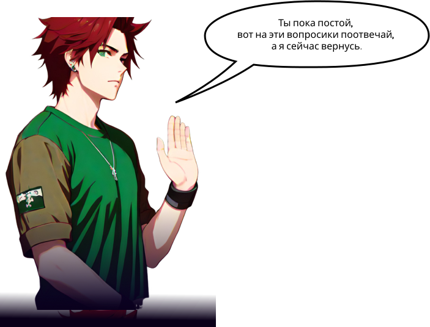

Ранее в комиксе...
help
Ранее в комиксе...
closeМагазин игрушек закрывается из-за конкуренции с новым пунктом выдачи. Команда ребят решает помочь магазинчику, который они все знают с детства и планирует создать лендинг.


Маркетолог занимается продвижением цифровых платформ, работает с социальными сетями, рекламой и услугами рынка. Если вы легко общаетесь с людьми, умеете анализировать рынок и создавать рекламные кампании, то можете остановить свой выбор на этой профессии.
что делает маркетолог?
- Исследование пользователей и анализ потребностей
- Создание прототипов и макетов интерфейса
- Оптимизация пользовательского опыта и удобства использования
- Разработка стилей и графических элементов
- Тестирование и анализ пользовательского опыта
- Сотрудничество с разработчиками и другими членами команды проекта


Олег
Для меня маркетинг- это извлечение прибыли из удовлетворения потребителя. При работе с потребителями для меня важно то, что нужно быть умнее и целиться на своего клиента, а не пытаться бороться с ними на одном рынке, понимаешь?
Для привлечения аудитории Digital-маркетолог выполняет следующие задачи:
- составляет стратегию
- регулярно изучает целевую аудиторию
- рассчитывает медиапланы
- использует и тестирует рекламные инструменты и площадки
- планирует и создает контент


 Выбери один вариант ответа и нажми кнопку “Проверить”
Выбери один вариант ответа и нажми кнопку “Проверить”

 Выбери один вариант ответа и нажми кнопку “Проверить”
Выбери один вариант ответа и нажми кнопку “Проверить”
СМОТРИ СКРИНКАСТ ПРЯМО СЕЙЧАС
Посмотри видео и ты еще больше узнаешь об этой профессии


Выполните задание и загрузите его в поле ниже, после его
проверки с вами свяжутся через Telegram